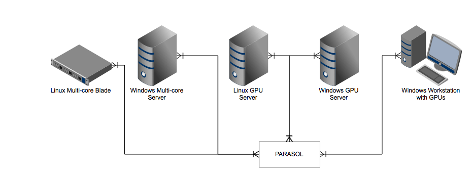

The Elevator Pitch
Parallel Solution Engine (or PARASOL™) is an
operating system agnostic middleware
framework to enable users to easily leverage a cluster
of
heterogeneous
systems with GPUs, CPUs and FPGAs to achieve
efficient parallelization of their algorithms.
What is a Heterogeneous Cluster ?
A combination of various types of systems

Click to enlarge the picture
For HPC Developers
PARASOL™ will:
- Abstract communications and events handling
- Permit mixing of systems with different compute devices
- Allow dynamic management of a cluster
- Perform intelligent workload distribution
... And ...
PARASOL™ will:
- Simplify implementation complexity
- Reduce Time to Market for your software
- Increase time available to focus on your algorithms
- Provide an operating system agnostic
C/C++ API
PARASOL™ Implements
- Communications between
heterogeneous systems
- Fault Tolerance
- Intelligent Workload Balancing
- Elastic Cluster Creation
PARASOL™ Solves
- Massively parallel problems
- Embarassingly parallel problems
- Graph parallel problems
- Custom domain decomposition algorithms
For System Administrators
PARASOL™ will:
- Maximize and manage the available resources provided
- Perform workload balancing and fault tolerance
- Work with existing HPC clusters that use MPI
- Allow mixing of old and new servers to form a cluster
- Handle Elastic cluster creation
Monitoring Systems
PARASOL™ integrates with the following using SNMP:
Supports Latest HPC Technology
PARASOL™ supports the latest advances in HPC technology:
- Graphical Processing Units(GPUs)
- Multi-processor and Multi-core CPUs
- Field Programmable Gate Array (FPGA) cards
Intelligent Workload Balancing
PARASOL™ implements this by:
- Retrieving information on each compute device
- Measuring the performance of the compute device
- Distributing the workload based on performance
- Handling failure and recovery of compute devices
- Automatic adjusting of workload based on performance
Fault Tolerance
PARASOL™ performs:
- Reliable detection of system failure
- Reliable detection of process failure
- Restarting of failed processes
- Rebalancing of workload for failed systems
Elastic Cluster Creation
A special feature of PARASOL™ where resources are
managed efficiently in the following way:
- New compute devices added when available
- Failed compute devices are restarted
- Unused workers can be shut down
Supported Hardware
PARASOL™ supports OpenCL 1.2 capable hardware:
- NVIDIA® GPUs
- AMD® GPUs and CPUs
- Intel® CPUs
Supported Operating Systems
PARASOL™ is operating system agnostic
and supports a cluster of heterogeneous
systems running the following:
- 64-bit Linux®
- 64-bit Microsoft Windows®